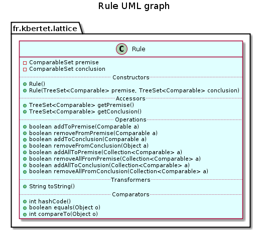

public class Rule extends Object implements Comparable
This class gives a representation for an implicational rule.
A rule is composed of a premise and a conclusion that are comparable sets, i.e. sets of elements that can be sorted by the lectic order defined by class ComparableSet.
This class implements class Comparable aiming at sorting rules by providing the compareTo(java.lang.Object) method.
Comparison between this component and those in parameter is realised by sorting their premises (lecticaly order), or their conclusion in case of equality of the premises.
The coherence of the lectically sort between rules isn’t ensured in case of modification of the rule. Therefore, it is strongly advised to replace each modified rule by a new one.

| Constructor and Description |
|---|
Rule()
Constructs a new empty Rule with a empty premise and an empty conclusion.
|
Rule(TreeSet<Comparable> premise,
TreeSet<Comparable> conclusion)
Constructs a new Rule with the premise and the conclusion given in parameters.
|
| Modifier and Type | Method and Description |
|---|---|
boolean |
addAllToConclusion(Collection<Comparable> a)
Adds the specified collection of indexed elements to the conclusion of this component.
|
boolean |
addAllToPremise(Collection<Comparable> a)
Adds the specified collection of indexed elements to the premise of this component.
|
boolean |
addToConclusion(Comparable a)
Adds the specified element to the conclusion of this component.
|
boolean |
addToPremise(Comparable a)
Adds the specified comparable to the premise of this component.
|
int |
compareTo(Object o)
Compares this component with the specified one by comparing their premises, or their conclusion in case of equality of the premises.
|
boolean |
equals(Object o)
Compares this component with the specified one.
|
TreeSet<Comparable> |
getConclusion()
Returns a copy of the conclusion of the Rule.
|
TreeSet<Comparable> |
getPremise()
Returns a copy of the premise of the Rule.
|
int |
hashCode()
Returns the hash code of this component.
|
boolean |
removeAllFromConclusion(Collection<Comparable> a)
Removes the specified collection of indexed elements from the conclusion of this component.
|
boolean |
removeAllFromPremise(Collection<Comparable> a)
Removes the specified collection of indexed elements from the premise of this component.
|
boolean |
removeFromConclusion(Object a)
Removes the specified comparable from the conclusion of this component.
|
boolean |
removeFromPremise(Comparable a)
Removes the specified comparable from the premise of this component.
|
String |
toString()
Returns a String representation of this component.
|
public Rule()
Constructs a new empty Rule with a empty premise and an empty conclusion.
public Rule(TreeSet<Comparable> premise, TreeSet<Comparable> conclusion)
Constructs a new Rule with the premise and the conclusion given in parameters.
premise - a set of indexed elementsconclusion - a set of indexed elementspublic TreeSet<Comparable> getPremise()
Returns a copy of the premise of the Rule.
public TreeSet<Comparable> getConclusion()
Returns a copy of the conclusion of the Rule.
public boolean addToPremise(Comparable a)
Adds the specified comparable to the premise of this component.
a - Comparable to add to this component’s premises.public boolean removeFromPremise(Comparable a)
Removes the specified comparable from the premise of this component.
a - Comparable to remove to this component’s premises.public boolean addToConclusion(Comparable a)
Adds the specified element to the conclusion of this component.
a - Comparable to add to this component’s conclusions.public boolean removeFromConclusion(Object a)
Removes the specified comparable from the conclusion of this component.
a - Comparable to remove to this component’s conclusions.public boolean addAllToPremise(Collection<Comparable> a)
Adds the specified collection of indexed elements to the premise of this component.
a - Collection of comparables to add to this component’s premises.public boolean removeAllFromPremise(Collection<Comparable> a)
Removes the specified collection of indexed elements from the premise of this component.
a - Collection of comparables to remove to this component’s premises.public boolean addAllToConclusion(Collection<Comparable> a)
Adds the specified collection of indexed elements to the conclusion of this component.
a - Collection of comparables to add to this component’s conclusions.public boolean removeAllFromConclusion(Collection<Comparable> a)
Removes the specified collection of indexed elements from the conclusion of this component.
a - Collection of comparables to remove to this component’s conclusions.public String toString()
Returns a String representation of this component.
The following format is used:
[elements of the premise separated by a space] -> [elements of the conclusion separated by a space]
a StringTokenizer is used to delete spaces in the string description of each element of premise and conclusion
public int hashCode()
Returns the hash code of this component.
public boolean equals(Object o)
Compares this component with the specified one.
public int compareTo(Object o)
Compares this component with the specified one by comparing their premises, or their conclusion in case of equality of the premises.
compareTo in interface Comparableo - object to compare to this component.Copyright © 2010–2014 Karell Bertet. All rights reserved.